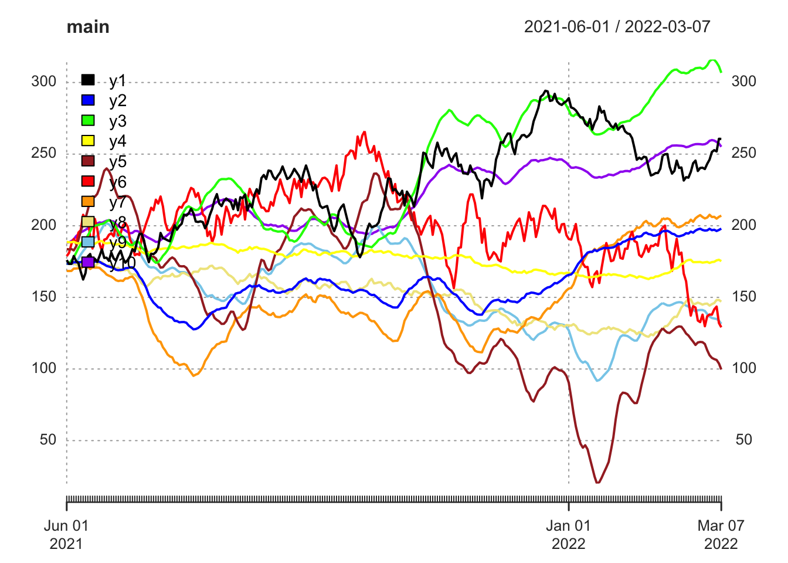

library(xts)
library(lmtest)
library(tidyverse)Time Series 2024 Project Topic 1 (FORECASTING FINANCIAL INSTRUMENTS PRICES WITH VECM AND ARIMA MODELS)
1 Importing the data
First, let’s load necessary libraries:
Let’s also load the additional function:
source("../code/functions/testdf.R")We will work with the Data concerning price indices:
- CPI - Consumer Price Index for All Urban Consumers: Energy, 1982=100, https://fred.stlouisfed.org/series/CPIENGSL
- PPI - Producer Price Index: Finished Energy Goods, 1982=100, https://fred.stlouisfed.org/series/WPSFD4121
- Monthly data: 01.1986-02.2019
- Source: U.S. Department of Labor, Bureau of Labor Statistics
- Economic Data - FRED(R) II - http://research.stlouisfed.org/fred2/
Now, we have to import the data:
TS <- read.csv("../data/TSA_2024_project_data_1.csv")The structure of the data:
TS %>% glimpse()Rows: 300
Columns: 11
$ date <chr> "2021-06-01", "2021-06-02", "2021-06-03", "2021-06-04", "2021-06-…
$ y1 <dbl> 176.04, 173.37, 173.42, 178.85, 175.39, 173.89, 167.80, 162.47, 1…
$ y2 <dbl> 173.57, 173.57, 173.57, 174.52, 174.46, 174.54, 174.57, 175.37, 1…
$ y3 <dbl> 173.57, 173.57, 175.70, 177.89, 181.10, 184.44, 187.00, 188.86, 1…
$ y4 <dbl> 188.66, 188.46, 188.57, 188.78, 188.11, 187.61, 188.22, 188.68, 1…
$ y5 <dbl> 183.66, 183.52, 183.75, 182.79, 185.46, 190.18, 196.22, 201.14, 2…
$ y6 <dbl> 178.78, 181.10, 187.25, 190.82, 187.30, 195.26, 196.95, 207.64, 2…
$ y7 <dbl> 168.46, 168.41, 168.47, 170.08, 170.15, 170.33, 170.32, 171.42, 1…
$ y8 <dbl> 173.57, 173.57, 173.57, 173.57, 172.94, 171.78, 173.37, 174.22, 1…
$ y9 <dbl> 173.57, 173.57, 173.57, 173.18, 174.50, 176.99, 179.91, 182.35, 1…
$ y10 <dbl> 188.35, 188.37, 189.36, 190.46, 192.73, 194.14, 195.44, 196.21, 1…head(TS) date y1 y2 y3 y4 y5 y6 y7 y8 y9
1 2021-06-01 176.04 173.57 173.57 188.66 183.66 178.78 168.46 173.57 173.57
2 2021-06-02 173.37 173.57 173.57 188.46 183.52 181.10 168.41 173.57 173.57
3 2021-06-03 173.42 173.57 175.70 188.57 183.75 187.25 168.47 173.57 173.57
4 2021-06-04 178.85 174.52 177.89 188.78 182.79 190.82 170.08 173.57 173.18
5 2021-06-05 175.39 174.46 181.10 188.11 185.46 187.30 170.15 172.94 174.50
6 2021-06-06 173.89 174.54 184.44 187.61 190.18 195.26 170.33 171.78 176.99
y10
1 188.35
2 188.37
3 189.36
4 190.46
5 192.73
6 194.14tail(TS) date y1 y2 y3 y4 y5 y6 y7 y8 y9
295 2022-03-22 268.68 196.26 289.20 174.51 36.93 97.94 204.83 145.53 100.31
296 2022-03-23 266.55 196.34 288.83 174.58 36.87 87.23 205.03 145.76 100.22
297 2022-03-24 266.38 196.25 287.98 174.18 35.33 78.05 205.08 144.81 99.39
298 2022-03-25 272.44 197.49 287.54 174.47 34.93 85.77 206.84 144.90 99.22
299 2022-03-26 267.64 198.03 286.01 173.46 35.01 95.43 208.08 143.75 99.22
300 2022-03-27 264.95 198.61 285.43 174.40 33.51 95.25 208.76 145.46 98.49
y10
295 246.30
296 245.85
297 245.64
298 245.77
299 244.87
300 244.08We have to correct the type of the date variable:
TS$date <- as.Date(TS$date, format = "%Y-%m-%d")
TS %>% glimpse()Rows: 300
Columns: 11
$ date <date> 2021-06-01, 2021-06-02, 2021-06-03, 2021-06-04, 2021-06-05, 2021…
$ y1 <dbl> 176.04, 173.37, 173.42, 178.85, 175.39, 173.89, 167.80, 162.47, 1…
$ y2 <dbl> 173.57, 173.57, 173.57, 174.52, 174.46, 174.54, 174.57, 175.37, 1…
$ y3 <dbl> 173.57, 173.57, 175.70, 177.89, 181.10, 184.44, 187.00, 188.86, 1…
$ y4 <dbl> 188.66, 188.46, 188.57, 188.78, 188.11, 187.61, 188.22, 188.68, 1…
$ y5 <dbl> 183.66, 183.52, 183.75, 182.79, 185.46, 190.18, 196.22, 201.14, 2…
$ y6 <dbl> 178.78, 181.10, 187.25, 190.82, 187.30, 195.26, 196.95, 207.64, 2…
$ y7 <dbl> 168.46, 168.41, 168.47, 170.08, 170.15, 170.33, 170.32, 171.42, 1…
$ y8 <dbl> 173.57, 173.57, 173.57, 173.57, 172.94, 171.78, 173.37, 174.22, 1…
$ y9 <dbl> 173.57, 173.57, 173.57, 173.18, 174.50, 176.99, 179.91, 182.35, 1…
$ y10 <dbl> 188.35, 188.37, 189.36, 190.46, 192.73, 194.14, 195.44, 196.21, 1…Let’s also transform the data.frame into an xts object
TS <- xts(TS[, -1], order.by = TS$date)We will work the the cpi and ppi variables. Let’s create their first differences.
TS$dy1 <- diff.xts(TS$y1)
TS$dy2 <- diff.xts(TS$y2)
TS$dy3 <- diff.xts(TS$y3)
TS$dy4 <- diff.xts(TS$y4)
TS$dy5 <- diff.xts(TS$y5)
TS$dy6 <- diff.xts(TS$y6)
TS$dy7 <- diff.xts(TS$y7)
TS$dy8 <- diff.xts(TS$y8)
TS$dy9 <- diff.xts(TS$y9)
TS$dy10 <- diff.xts(TS$y10)head(TS) y1 y2 y3 y4 y5 y6 y7 y8 y9
2021-06-01 176.04 173.57 173.57 188.66 183.66 178.78 168.46 173.57 173.57
2021-06-02 173.37 173.57 173.57 188.46 183.52 181.10 168.41 173.57 173.57
2021-06-03 173.42 173.57 175.70 188.57 183.75 187.25 168.47 173.57 173.57
2021-06-04 178.85 174.52 177.89 188.78 182.79 190.82 170.08 173.57 173.18
2021-06-05 175.39 174.46 181.10 188.11 185.46 187.30 170.15 172.94 174.50
2021-06-06 173.89 174.54 184.44 187.61 190.18 195.26 170.33 171.78 176.99
y10 dy1 dy2 dy3 dy4 dy5 dy6 dy7 dy8 dy9 dy10
2021-06-01 188.35 NA NA NA NA NA NA NA NA NA NA
2021-06-02 188.37 -2.67 0.00 0.00 -0.20 -0.14 2.32 -0.05 0.00 0.00 0.02
2021-06-03 189.36 0.05 0.00 2.13 0.11 0.23 6.15 0.06 0.00 0.00 0.99
2021-06-04 190.46 5.43 0.95 2.19 0.21 -0.96 3.57 1.61 0.00 -0.39 1.10
2021-06-05 192.73 -3.46 -0.06 3.21 -0.67 2.67 -3.52 0.07 -0.63 1.32 2.27
2021-06-06 194.14 -1.50 0.08 3.34 -0.50 4.72 7.96 0.18 -1.16 2.49 1.41Next, we plot both variables on the graph:
plot(TS[, 1:10],
col = c("black", "blue", "green", "yellow", "brown", "red", "orange", "khaki", "skyblue", "purple"),
major.ticks = "years",
grid.ticks.on = "years",
grid.ticks.lty = 3,
main = "main",
legend.loc = "topleft")
Diff
plot(TS[, 11:20],
major.ticks = "months",
grid.ticks.on = "days",
main = "...",
legend.loc = "..")Alternatively, using the ggplot2 package:
2 Testing cointegration
In the next step, we will perform the tests of integration order.
First, let’s apply the ADF test for the cpi variable and its first differences.
testdf(variable = TS$y1,
max.augmentations = 3)
augmentations adf p_adf bgodfrey p_bg
1 0 -1.650473 0.4424618 3.241635190 0.07178896
2 1 -1.824610 0.3776076 0.001007918 0.97467324
3 2 -1.838503 0.3724333 0.001871646 0.96549227
4 3 -1.575030 0.4705592 0.033019599 0.85580800testdf(variable = TS$dy1,
max.augmentations = 3)
augmentations adf p_adf bgodfrey p_bg
1 0 -15.565954 0.01 0.00008054226 0.9928395
2 1 -11.418055 0.01 0.00020022839 0.9887101
3 2 -11.107373 0.01 0.02997494392 0.8625471
4 3 -8.901743 0.01 0.00039408259 0.9841618Since we can reject the null in the case of the first differences, we can conclude that the y1 is from I(1).
testdf(variable = TS$y2,
max.augmentations = 3)
augmentations adf p_adf bgodfrey p_bg
1 0 0.6976820 0.9900000 123.7381593067 9.612731e-29
2 1 -0.5613589 0.8480833 11.7643483763 6.037601e-04
3 2 -1.1293522 0.6365441 0.0010575970 9.740568e-01
4 3 -1.1373793 0.6335546 0.0009233425 9.757588e-01testdf(variable = TS$dy2,
max.augmentations = 3)
augmentations adf p_adf bgodfrey p_bg
1 0 -7.989698 0.01 11.40407820720 0.0007328305
2 1 -5.274622 0.01 0.00505296646 0.9433307263
3 2 -5.093104 0.01 0.00078625388 0.9776300736
4 3 -4.960609 0.01 0.00001867225 0.9965522398testdf(variable = TS$y3,
max.augmentations = 3)
augmentations adf p_adf bgodfrey p_bg
1 0 -1.236545 0.5966220 226.055767634 4.320616e-51
2 1 -1.879758 0.3570684 11.299623173 7.752282e-04
3 2 -1.404671 0.5340065 0.002880886 9.571950e-01
4 3 -1.390255 0.5393753 0.004112625 9.488669e-01testdf(variable = TS$dy3,
max.augmentations = 3)
augmentations adf p_adf bgodfrey p_bg
1 0 -4.529095 0.01 11.909159398 0.000558586
2 1 -5.539558 0.01 0.007551809 0.930750088
3 2 -5.387325 0.01 0.004472689 0.946678695
4 3 -4.529314 0.01 0.007666338 0.930228281testdf(variable = TS$y4,
max.augmentations = 3)
augmentations adf p_adf bgodfrey p_bg
1 0 -1.494391 0.5005919 5.489991536 0.01912564
2 1 -1.523066 0.4899123 0.010239621 0.91939883
3 2 -1.564103 0.4746287 0.000797029 0.97747735
4 3 -1.606214 0.4589453 0.008754567 0.92545404testdf(variable = TS$dy4,
max.augmentations = 3)
augmentations adf p_adf bgodfrey p_bg
1 0 -14.976766 0.01 0.0087075148 0.9256541
2 1 -10.799792 0.01 0.0003821666 0.9844031
3 2 -8.919976 0.01 0.0067849676 0.9343518
4 3 -5.921353 0.01 0.5225322881 0.4697635testdf(variable = TS$y5,
max.augmentations = 3) augmentations adf p_adf bgodfrey p_bg
1 0 0.6234327 0.9900000 218.9601184 1.524792e-49
2 1 -1.7851697 0.3922964 25.4345834 4.576401e-07
3 2 -0.9704224 0.6957347 0.9759952 3.231895e-01
4 3 -1.2852087 0.5784981 0.0930106 7.603841e-01testdf(variable = TS$dy5,
max.augmentations = 3)
augmentations adf p_adf bgodfrey p_bg
1 0 -4.783862 0.01 26.83547720 0.0000002215329
2 1 -6.624693 0.01 0.93358586 0.3339328718434
3 2 -5.245343 0.01 0.10370831 0.7474241009064
4 3 -5.506683 0.01 0.01398566 0.9058608597585testdf(variable = TS$y6,
max.augmentations = 3)
augmentations adf p_adf bgodfrey p_bg
1 0 -0.6336457 0.8211613 0.4571519140 0.4989580
2 1 -0.4964736 0.8722487 0.0005071421 0.9820333
3 2 -0.4444151 0.8916370 0.0010144790 0.9745910
4 3 -0.3930213 0.9040193 0.0003159478 0.9858184testdf(variable = TS$dy6,
max.augmentations = 3)
augmentations adf p_adf bgodfrey p_bg
1 0 -18.012092 0.01 0.0007932275 0.9775311
2 1 -12.542031 0.01 0.0011870441 0.9725155
3 2 -10.204864 0.01 0.0003550911 0.9849657
4 3 -8.516099 0.01 0.0002669061 0.9869653testdf(variable = TS$y7,
max.augmentations = 3) augmentations adf p_adf bgodfrey p_bg
1 0 0.6979600 0.9900000 118.646839000 1.251388e-27
2 1 -0.5365735 0.8573142 12.478656088 4.116282e-04
3 2 -1.1320920 0.6355237 0.000186570 9.891020e-01
4 3 -1.1469827 0.6299780 0.000645176 9.797357e-01testdf(variable = TS$dy7,
max.augmentations = 3)
augmentations adf p_adf bgodfrey p_bg
1 0 -8.174416 0.01 12.1264287364 0.0004971223
2 1 -5.277486 0.01 0.0030362304 0.9560572032
3 2 -5.081266 0.01 0.0004968427 0.9822166504
4 3 -5.006448 0.01 0.0003413420 0.9852595684testdf(variable = TS$y8,
max.augmentations = 3)
augmentations adf p_adf bgodfrey p_bg
1 0 -1.479208 0.5062464 12.0381804638 0.0005212182
2 1 -1.543628 0.4822543 0.0025524519 0.9597065804
3 2 -1.554829 0.4780826 0.0002883662 0.9864514951
4 3 -1.590099 0.4649471 0.0998735349 0.7519814499testdf(variable = TS$dy8,
max.augmentations = 3)
augmentations adf p_adf bgodfrey p_bg
1 0 -13.993074 0.01 0.0016383310 0.9677134
2 1 -10.691950 0.01 0.0001454344 0.9903780
3 2 -8.519015 0.01 0.0900689717 0.7640895
4 3 -5.601904 0.01 1.0258157271 0.3111435testdf(variable = TS$y9,
max.augmentations = 3)
augmentations adf p_adf bgodfrey p_bg
1 0 0.6277666 0.9900000 219.54892795 1.134421e-49
2 1 -1.7991091 0.3871048 27.24224077 1.794940e-07
3 2 -0.9483910 0.7039400 1.17095587 2.792049e-01
4 3 -1.2993073 0.5732473 0.08914212 7.652706e-01testdf(variable = TS$dy9,
max.augmentations = 3)
augmentations adf p_adf bgodfrey p_bg
1 0 -4.763719 0.01 28.67058055 0.00000008579729
2 1 -6.682840 0.01 1.12584975 0.28866232922388
3 2 -5.224669 0.01 0.10053442 0.75118925055468
4 3 -5.511692 0.01 0.01624628 0.89857560949037testdf(variable = TS$y10,
max.augmentations = 3)
augmentations adf p_adf bgodfrey p_bg
1 0 -1.258058 0.5886099 171.69703500 3.151575e-39
2 1 -1.557003 0.4772730 6.99487993 8.174319e-03
3 2 -1.677215 0.4325021 0.27090641 6.027244e-01
4 3 -1.441749 0.5201975 0.06282286 8.020887e-01testdf(variable = TS$dy10,
max.augmentations = 3)
augmentations adf p_adf bgodfrey p_bg
1 0 -6.346090 0.01 6.597081104 0.01021461
2 1 -4.839809 0.01 0.259772938 0.61027619
3 2 -5.495769 0.01 0.052990722 0.81793859
4 3 -4.757224 0.01 0.003056925 0.95590786Since we can reject the null in the case of the first differences, we can conclude that the yi is from I(1) (i=1,2,3…..)
Again, we can conclude that the ppi is integrated of order 1, as we can reject the null in the case of the first differences.
As a result, both variables are \(\sim I(1)\), so in the next step we can check whether they are cointegrated.
To estimating the cointegrating vector, we will estimate the following model:
model.coint <- lm(y2 ~ y7, data = TS)Let’s examine the model summary:
summary(model.coint)
Call:
lm(formula = y2 ~ y7, data = TS)
Residuals:
Min 1Q Median 3Q Max
-0.37836 -0.07828 0.00166 0.07699 0.35805
Coefficients:
Estimate Std. Error t value Pr(>|t|)
(Intercept) 68.1875272 0.0354341 1924 <2e-16 ***
y7 0.6252180 0.0002248 2781 <2e-16 ***
---
Signif. codes: 0 '***' 0.001 '**' 0.01 '*' 0.05 '.' 0.1 ' ' 1
Residual standard error: 0.1242 on 298 degrees of freedom
Multiple R-squared: 1, Adjusted R-squared: 1
F-statistic: 7.732e+06 on 1 and 298 DF, p-value: < 2.2e-16Next, we have to test stationarity of residuals. What is the proper ADF statistic?
testdf(variable = residuals(model.coint), max.augmentations = 3)
augmentations adf p_adf bgodfrey p_bg
1 0 -16.100648 0.01 0.008387942 0.9270272
2 1 -10.951684 0.01 0.003019590 0.9561777
3 2 -9.786195 0.01 0.007105877 0.9328208
4 3 -9.111277 0.01 0.004345257 0.9474427What is the result of cointegration test? What is the cointegrating vector?
The ADF test with no augmentations can be used its result is that non-stationarity of residuals is STRONGLY REJECTED, so residuals are stationary, which means that ppi and cpi are cointegrated.
The cointegrating vector is [1, -68.188 , -0.625]
which defines the cointegrating relationship as: 1 * cpi - 68.188 - 0.625 * ppi,
Now, let’s create first lags of residuals and adding them to the dataset
Y <- c('y1', 'y2', 'y3', 'y4', 'y5', 'y6', 'y7', 'y8', 'y9', 'y10')
for (i in 1:9) {
for (j in (i + 1):10) {
model.coint <- lm(formula = paste(Y[i], "~", Y[j]), data = TS)
testdf(variable = residuals(model.coint), max.augmentations = 3)
}
}


``{r} ppi_cpi$lresid <- lag.xts(residuals(model.coint))
## 3 Estimating ECM
We are ready to estimate the ECM model, which is described by the following functional form:
$$\Delta \mathsf{cpi}_t = \alpha_0 + \alpha_1\Delta \mathsf{ppi}_t + \alpha_2(\mathsf{cpi}_{t-1} - \beta_0 - \beta_1\mathsf{ppi}_{t-1}) + \varepsilon_t$$
{r}
model.ecm <- lm(dcpi ~ dppi + lresid, data = ppi_cpi) Let’s see the model summary: {r} summary(model.ecm)
The intercept is insignificant, hence we can remove it from the model:
{r}
model.ecm <- lm(dcpi ~ dppi + lresid - 1,
# -1 denotes a model without a constant
data = ppi_cpi) Let’s see the model summary again: {r} summary(model.ecm)
How would you interpret results of the model above?
The parameter r summary(model.ecm)$coefficients[1, 1] %>% round(3)` describes a short term relationship between `cpi` and `ppi`, so if `ppi` increases by 1 then the `cpi` in the **short run** will increase by r summary(model.ecm)$coefficients[1, 1] %>% round(3)`.
The long run relationship is described by the parameter -1.081 from the cointegrating relationship: so if `ppi` increases by 1 in the LONG RUN `cpi` will increase by -1.081.
The value of r summary(model.ecm)$coefficients[2, 1] %>% round(3)` is the estimate of the *adjustment coefficient*. As expected, its sign is negative and this value means that r -summary(model.ecm)$coefficients[2, 1] %>% round(4)` of the unexpected error (increase in gap) will be corrected in the next period, so any unexpected deviation should be corrected finally on average within about r (1/(-summary(model.ecm)$coefficients[2, 1])) %>% round(1)` periods.
## 4 Granger causality test
Now let's check, whether `ppi` Granger causes `cpi` and vice versa. What is the proper lag length in this case?
Let's try with 3 lags. First, the `ppi` as the dependent variable:
{r}
grangertest(ppi ~ cpi,
data = ppi_cpi,
order = 3) # lag assumedIs cpi a Granger cause of ppi?
Next, the cpi as the dependent variable. {r} grangertest(cpi ~ ppi, data = ppi_cpi, order = 3) # lag assumed
Is `ppi` a Granger cause of `cpi`?
In both cases the null about **NO CAUSALITY** is **rejected**, at least at the 95% confidence level.
Now, let's repeat the analysis for 4 lags.
{r}
grangertest(ppi ~ cpi,
data = ppi_cpi,
order = 4) # lag assumedIs cpi a Granger cause of ppi?
{r} grangertest(cpi ~ ppi, data = ppi_cpi, order = 4) # lag assumed
Is `ppi` a Granger cause of `cpi`?
Again, let's repeat the analysis for 5 lags:
{r}
grangertest(ppi ~ cpi,
data = ppi_cpi,
order = 5) # lag assumedIs cpi a Granger cause of ppi?
{r} grangertest(cpi ~ ppi, data = ppi_cpi, order = 5) # lag assumed ``Isppia Granger cause ofcpi`?
What is the conclusion?
At 5% significance level (or 95% confidence level) we have so called bi-directional feedback in all cases.
Now, we have to note, that the Granger causality analysis above is based on the non-stationary time series. If we wanted to remove risks of getting spurious regressions, we should rather use the differenced time series.